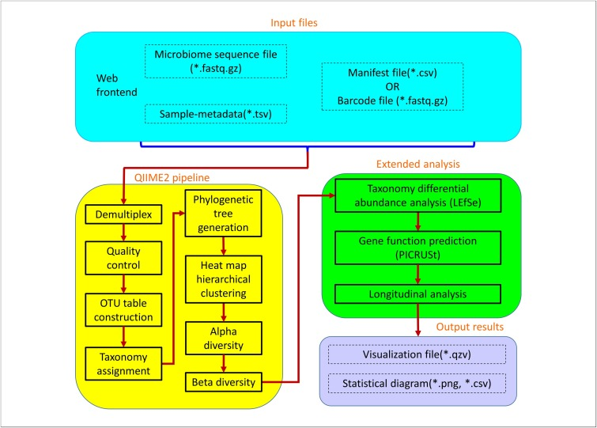

Cancer genomics has been evolving rapidly, fueled by the emergence of numerous studies and public databases through next-generation sequencing technologies. However, the downstream programs used to preprocess and analyze data on somatic mutations are scattered in different tools, most of which require specific input formats. Here, we developed a user-friendly Python toolkit, MutScape, which provides a comprehensive pipeline of filtering, combination, transformation, analysis and visualization for researchers, to easily explore the cohort-based mutational characterization for studying cancer genomics when obtaining somatic mutation data. MutScape not only can preprocess millions of mutation records in a few minutes, but also offers various analyses simultaneously, including driver gene detection, mutational signature, large-scale alteration identification and actionable biomarker annotation. Furthermore, MutScape supports somatic variant data in both variant call format and mutation annotation format, and leverages caller combination strategies to quickly eliminate false positives. With only two simple commands, robust results and publication-quality images are generated automatically. Herein, we demonstrate the ability of MutScape to correctly reproduce known results using breast cancer samples from The Cancer Genome Atlas. More significantly, discovery of novel results in cancer genomic studies is enabled through the advanced features in MutScape. MutScape is freely available on GitHub, at https://github.com/anitalu724/MutScape.
MutScapeAs next-generation sequencing technology has become more advanced, research on microbial 16S ribosomal DNA sequences has developed rapidly. Sequencing of 16S ribosomal DNA allows the composition of bacteria and archaea in a sample to be obtained and many analytical tools related to 16S ribosomal DNA sequences have been proposed; however, most do not include a user-friendly platform with a graphical user interface. Here, a comprehensive and easy-to-use online platform, Easy Microbiome Analysis Platform (EasyMAP), has been developed for analysis of 16S ribosomal DNA sequencing data. EasyMAP integrates the QIIME2, LefSe, and PICRUSt pipelines and includes temporal profiling analysis. Users can perform quality checks, taxonomy differential abundance analysis, microbial gene function prediction and longitudinal analysis with step-by-step guidance. EasyMAP is a user-friendly tool for comprehensive analysis of 16S ribosomal DNA sequencing data. The web server and documentation are freely available at http://easymap.cgm.ntu.edu.tw/.
 EasyMAPto be added
to be added
Deciphering breast cancer molecular subtypes by DL approaches could provide a convenient and method for the diagnosis of breast cancer patients. It could reduce costs associated with transcriptional profiling and subtyping discrepancy between IHC assays and mRNA expression. Therefore, we aim to develop a highly versatile 2-steps transfer learning pipeline for pathological images using weight obtained from model trained with the 70 gene signature images, for our final study. Weights from 4 pre-trained models namely VGG16, ResNet50, ResNet101, and Xception were used to train TCGA-BRCA datasets to predict 4 intrinsic breast cancer subtypes. Furthermore, ResNet101 model was used for training with weights from ImageNet for comparison with the aforementioned models. The 2-steps DL models showed promising classification results with the overall accuracy of slide-wise prediction as 0.913 with ResNet101 model. The DL model was additionally benchmarked with the common Genefu tool for breast cancer classification. The results demonstrated that the performance of the DL model is comparable to that of Genefu, even superior in certain breast cancer subtypes.
The whole slide images (WSI) were used to generate smaller patches of 512x512 pixels. These small patches then underwent normalization for hematoxylin and eosin staining. Next, blurry and pixelated images were removed using the Laplacian algorithm. The retained images were used for model training, validation, and testing. Finally, to illustrate how different models learn to distinguish low-risk and high-risk samples, we used gradient- weighted class activation to create a heatmap for each image.